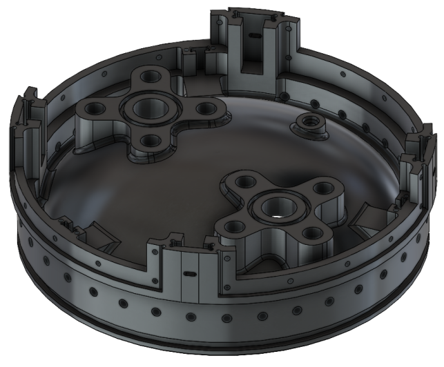
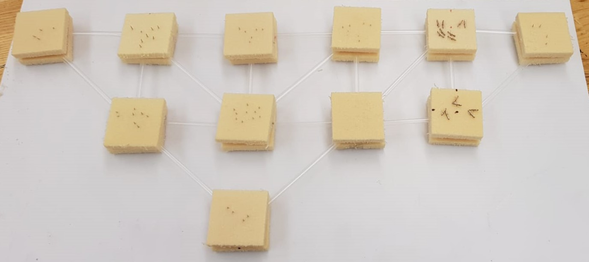

I'm a first-year Masters student in aerospace engineering at Georgia Tech. I'm interested in aeronautics and sustainable techonologies, specifically eVTOL and vertical lift research, urban and regional air mobility, and fully electric and hybrid electric aircraft concepts. I did my undergrad at Boston University in mechanical engineering with a concentration in aeropsace. I took a gap year in 2020-2021 to do two internships at NASA, I completed an internship at Pratt & Whitney in the summer of 2019, and I was heavily involved in BU's Rocket Propulsion Group throughout undergrad. See my portfolio below for technical summaries, videos and pictures from all of my most important enginering experiences from internships, undergraduate exctracurriculars, and classes. I coded this website from scratch using HTML and CSS as a project in and of itself. For my work experience summary and education, please visit my LinkedIn!
During my 5-month internship at NASA Langley Research Center in the fall of 2020, I was tasked with researching the viability of the aerodynamic analysis tool, VSPAERO, to rapidly evaluate aerodynamics of aircraft conceptual designs with propeller-blown wing configurations. In order to run the many flow conditions and propeller locations that we planned to study, I had to complete several smaller tasks in preparation. I studied what parameters needed to be used to setup the simulation appropriately. I conducted an extensive mesh study and selected an appropriate mesh refinement for the final simulations. I learned how to script OpenVSP and VSPAERO to be able to run many simulations which tested different setup methods or swept through parameters to identify patterns in changes in outputs. In order to analyze results, I wrote scripts in MATLAB to quickly process results into aerodynamic coefficients versus mesh refinement plots, and I studied VSPAERO’s output flow visualizations. In the spring following my internship a new intern continued the research, and together we wrote a conference paper to report our findings and presented at a technical session at the 2021 AIAA Aviation conference. Click here to read the paper!
During my 8-month internship at NASA Glenn Research Center in 2021, I was tasked with designing a battery box for a hybrid electric propulsion demonstrator aircraft, that would also act as a structural wing spar. The highly experimental design would need to maintain structural strength margins even in the case of battery failure which produces high thermal loads (which weaken metals) and involved complicated thermal requirements, demanded thorough research, various design iterations, many meetings with subject matter experts, and extensive thermal-structural analysis. I researched and compiled a set of safety requirements from standards RTCA/DO-311 and RTCA/DO-160, and designed for the constraints set by the standards. I became familiar with how the batteries operated and how to design for failure including thermal runaway. I took into account electrical, mass, and energy considerations, and designed for the many structural and thermal loads. I created a 3D computer aided design model of the battery box/wing spar using SolidWorks. I made hardware selection for commercial off the shelf components. I conducted preliminary static structural and dynamic structural stress analysis in finite element analysis software ANSYS mechanical. My internship culminated in a periodic technical review for which I presented my preliminary design from which a first prototype would be manufactured.
For my senior design project, my team and I shared an interest in research and completing a project with a humanitarian application, leading to our project designing and building an energetically passive water harvesting device for applications in arid climates. Our device worked in three main phases: absorption, desorption, and condensation. For the absorption phase we used a desiccant (a chemical that tends to absorb moisture from the air) laid out in trays and exposed to the environment to absorb air moisture. With air moisture trapped into a desiccant solution, we now needed to separate the water back out from the desiccant solution. We evaporated the water out of the desiccant solution, turning it into steam in the desorption phase. Desorption was achieved by creating a solar oven in which the trays would be placed after the absorption phase. Finally, with the extracted water turned to steam the water needed to be condensed, this was achieved by letting one wall of the solar oven be cooler than the rest by removing the insulation and using conductive metal for the wall material, allowing the water to condense on the cooler wall into a water trough placed inside the oven.
Two prototypes of the water harvester were made, through which we learned a lot about the solar oven and condenser design. Several small scale tests were conducted to inform our desiccant choice and prototype designs. During the first semester extensive testing was done on various desiccants and substrates aiming to maximize absorption rate, leading to using calcium chloride as the desiccant in burlap as the substrate. A condenser design was also chosen through testing efforts, we had considered using a condenser tube that exited the solar oven to cool the steam, but found this design caused significant thermal losses, leading to the design to use a condenser surface. We also learned from one prototype to the next. We found that a solar oven lined with a reflective interior concentrating radiation on the desiccant solution worked very quickly, but was quite sensitive to angling towards the sun, a black interior, was less sensitive to angling but warmed the desiccant solution more slowly. Additionally, the size of our second oven was too large to heat the desiccant in an acceptable time frame. Our second prototype did condense a small amount of water, proving our design concept. Unfortunately, the year-long research project did not provide sufficient time to create a third prototype applying all our learning and hopefully condensing more water. However, we were able to provide a working theory and a solid foundation of knowledge through which a future senior design team can build on to continue the work!
During my third year as an active member of BU’s Rocket Propulsion Group (BURPG) I developed the aft endcap of the fuel tank and the engine’s thrust structure for a liquid bi-propellant launch vehicle - Pursuit. The launch vehicle uses a pressurized feed system, driving the complexity of the endcap design. I conducted trade studies to determine the best shape of the endcap (hemisphere, ellipsoid or torisphere) for a pressurized fuel tank, most suitable materials (compared various aluminum alloys and steel), which attachment mechanism to the tanks would be best (bolts loaded in tension, in shear, or welding), and to determine a thrust structure concept.
I applied mechanics of materials principals (stress due to normal/axial tension/compression, bending stress, combined loading calculations, buckling calculations, and von Mises combined stress equations for pressure vessels), dynamics (free body diagrams to determine load cases), and materials science principles (accounted for material compatibility between steel and aluminum, and for strength reduction of metals at high temperatures) to design the overall structures and to select commercial off the shelf (COTS) hardware. I accounted for interfaces with the fluids subsystem by designing interfaces for fluid routing, and designing the fluid components (fittings and instrumentation) layout leading to the engine. I followed NASA standards NASA-STD-5001B (Structural Design and Test Factors of Safety for Spaceflight Hardware) and NASA-STD-5020A (Requirements for Threaded Fastening Systems in Spaceflight Hardware) for structural factors of safety and design requirements, and used the military handbook MIL-HDBK-5 (Metallic Materials and Elements for Aerospace Vehicle Structures) for material property information. I modeled the endcap and the thrust structure assembly using SolidWorks, and conducted structural analysis using the SolidWorks FEA tool. Pursuit is expected to launch in the winter of 2022! Click here to learn more about Pursuit and BURPG.
During my second year as an active member of BURPG, I was tasked with designing a gimbal mechanism for the interface between an engine and a test stand in order to achieve thrust vectoring. My role was to design for the mechanical and structural requirements of the thrust plate that would attach to the test stand, the universal joint that would allow the engine to gimbal, and the engine interface. I performed the structural calculations and 3D modelling. I started this project by researching different joint options for the gimbal and decided to move forward with the universal joint (U-joint). I designed a thrust plate which would transfer the load from the U-joint to the test stand, the challenge was to design a strong plate with the necessary cutouts to prevent interference with servo motors and components while the engine was gimbaling. I designed a U-joint which had the shape of a plus sign with circular cross sections. The arms were designed to be hollow to add additional strength to the joint, and this was verified by finite element analysis done in SolidWorks. I also designed bearing stands which would attach the thrust plate to the U-joint, and I did hardware selection for bearings that would support the load of the engine at maximum thrust both during static and dynamic conditions. I designed the component that would attach U-joint arms to the engine itself. The design was made to be able to be built off of for a flight situation so this was made out of aluminum for mass savings. While this project was unfortunately cancelled, it provided me with incredible mechanical design experience that allowed me to take on more difficult technical projects both in BURPG and in internships in future years!
For the same project as the gimbal mechanism a heat sink engine was designed to test the engine’s internal geometry; I designed a thrust plate to interface with the test stand. The thrust plate was designed to be part of the engine and stacks with the other engine components allowing the injector to go through the plate (with proper tolerances applied). The part was designed using stainless steel as it would be able to maintain its strength at high temperatures. Finite element analysis was done on the plate using the yield strength of stainless steel at elevated temperatures. A 3D model was created using SolidWorks. The part was machined using a CNC mill.
During my first year as an active member of BURPG, I designed an avionics bay to contain the PCBs and sensors that would be used for a solid rocket launch vehicle. The first version of the avionics bay used a 3-D printed box with walls enclosing the circuit boards. Standoffs attached the circuit boards to the bay itself, and plastic lids were made with connector holes to attach wiring to the rest of the rocket. The second version used CNC milled, parallel, aluminum plates sandwiching the PCB standoffs. The reason for the design change was that there was a change in the software configuration which required different PCBs. Using my experience designing the first version, and trying to save time and money on materials, I redesigned the bay with aluminum to use scrap metal we had in lab. In both versions the avionics bay, was attached to a CNC milled bulkhead which would attach to the rest of the rocket using vibration dampeners to protect the PCBs from vibration loads.
I built an Arduino video game controller for my product design class in a group of four. We wanted to make a controller that was hands-free, so we chose a headset controller design. The headset contained an accelerometer in one ear, which was attached to a microphone with an extension so that the microphone was placed directly in front of the mouth of the user allowing for more controls. The controller was designed for the game Temple Run, the user tilts their head to direct the avatar to the left, right or center, and says “jump” into the microphone to jump and blows into the microphone to slide. The microphone worked by changing the control based on the input volume. l made the CAD model in SolidWorks and included thread cutouts for screws and pins that would be 3D printed to ensure proper alignment during assembly. The controller was 3-D printed using two different 3-D printing materials. One allowed for the headset to be more flexible, and the microphone component was made using a material that was printed with supports that could be removed with a chemical bath because the attachment had a hollowed tube to wire the microphone. The headset was sized using average head sizes of adult men and women.
I created an ergonomic, foam cutting tool for my product design class as part of a group of four. We were required to make a tool that would contain a nichrome wire, which was heated by connecting it to a power supply. The design had to include a button so the user could control when heat was applied, and the tool had to thermally isolate the handle from the wire. I modeled the tool in SolidWorks. I chose a bowling pin shape for the tool handle, this was to make the tool ergonomic, and I found average hand sizes of adult men and women to size the tool. The tool was 3D printed in two parts which closed together over the internal wires and insulation, the two halves were attached with screws. We chose silicon as the nichrome wire insulator as it was malleable and would not break.
For my Static Mechanics class, I analyzed and built a truss bridge made from straws in a team of four. We conducted straw testing to determine a strength to straw length relationship. I calculated forces, moments and reaction forces and moments through hand calculations using the method of sections and the joint method. We used a computer calculator to compare strength calculations to those done by hand, and to determine cost of the truss bridge. We converged on a design through various design iterations and strategically attempted to put most loaded members in tension, as this is the strongest loading configuration for an axially loaded straw. We conducted final testing of the truss bridge at the end of the semester, which was the second strongest bridge in the class winning us a coffee shop gift card!
